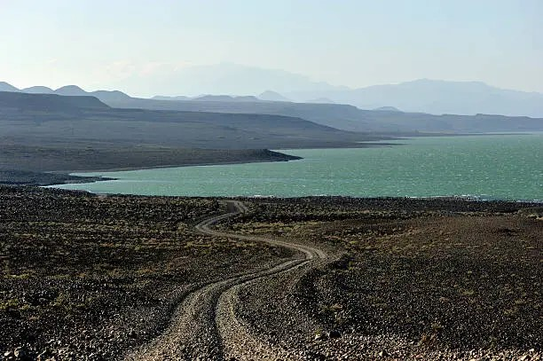

Why Turkana Is Kenya’s Best-Kept Secret
Posted on June 25, 2025 | By Jirani Team
Far from the bustling cities and crowded beaches lies a land of surreal beauty and cultural depth — Turkana. Located in northern Kenya, this region offers a journey into timeless tradition, dramatic landscapes, and raw adventure.
Start with Lake Turkana, the largest desert lake in the world. Its jade waters shimmer against volcanic rock and expansive skies. Explore the El Molo tribe, Africa’s smallest ethnic group, and learn about traditional fishing in dugout canoes.
Don’t miss Central Island National Park — a volcanic island with crocodile-inhabited crater lakes. And if you time your trip right, the Lake Turkana Festival brings together over 10 communities in a cultural celebration.